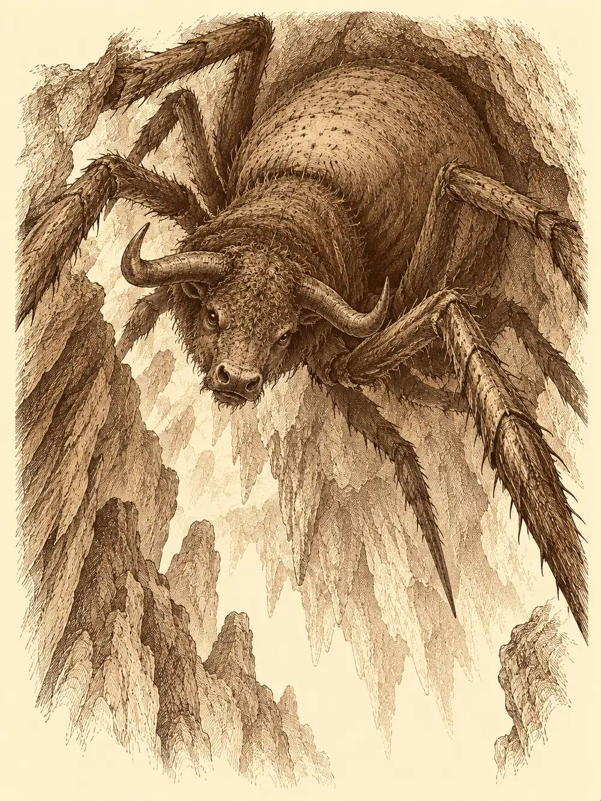

Capítulo 94
La salvaje
Libro VI · La Puerta Negra
El portal del Sur ya funcionaba. El inugami lo había terminado y conectado, y Palayer fue de las primeras en cruzarlo. Venía del frente, donde había pasado semanas junto a Aka bajo una lluvia que no paraba nunca, y la habían obligado a descansar. Era una drow de cabello plateado, con la armadura de paladina y el símbolo de Eilistraee sobre el pecho, y llevaba casi tres mil años de retraso con el mundo: Suzaku la había preservado todo ese tiempo y hacía muy poco que había despertado. No conocía a nadie en la base de Sho. Se sentó a la mesa a esperar.
Guxi andaba ocupado. Con el shogun cada vez más enfermo, Rua cargaba con más asuntos de palacio, y el artífice trabajaba con ella más que nunca. Aun así había mandado aviso a los tres cazadores nuevos para formalizar de una vez su ingreso: Palayer, Rodrigo y Banzo.
Rodrigo llegaba de Hakara con cara de no haber dormido. Allí, mientras esperaba al monje, la gente le había pedido historias, y él, armándose de valor, había contado una. Otra vez los oyentes habían acabado dentro del relato. Por suerte aquella no era una historia violenta. Cuando por fin llegó el monje, le pidió que investigara aquel poder, y el monje no supo decirle de dónde le venía.
Banzo traía marcas de cuchillas por todo el cuerpo. La noche anterior había intentado hacerse amigo del kamaitachi de Ukio, y el kamaitachi había tenido otra idea.
"Somos una organización que trabaja para el shogunato", les explicó Guxi mientras repartía los papeles. "Nos ocupamos de los yokai que se descontrolan y hacen daño. No somos un ejército. Ahora, con Otakemaru agitando a casi todos los yokai, hay mucho trabajo".
"O sea, que me van a pagar por lo que ya hacía por gusto", dijo Palayer.
Los contratos eran mágicos. Según el artífice, detectaban las mentiras de quien los firmaba. Rodrigo ayudó a Banzo a leer el suyo y se lo rellenó, porque el goliat leía como un niño pequeño. A la hora de firmar, Banzo apoyó el pulgar en el papel. Uno de los tatuajes de su pecho se deslizó como una cinta por el brazo hasta la yema del dedo, y al levantarlo quedó en el contrato un símbolo marcado.
"Firmado", anunció, y dio un golpe en la mesa.
La puerta se abrió y entró Danifae. Miró a Guxi con una sonrisa de ya están aquí estos, rodeó la mesa ignorando a los nuevos, se sentó a su lado y puso los pies encima, como siempre. Entonces sus ojos se detuvieron en Palayer. En el símbolo de su pecho.
Algo le cambió en la cara y bajó los pies. Y con las manos, en el lenguaje de signos de los drow que nadie más en la sala entendía, le dijo a la paladina que necesitaba su ayuda.
Palayer la estudió con atención y no encontró mentira en su gesto. Le respondió, también por signos, que le contara.
Danifae le contó que quería abandonar a Lolth. Que para hacerlo necesitaba reunir unas esferas, porque eran lo que le permitiría romper la marca. Se levantó un poco la camisa y le enseñó, junto a las costillas, la marca de una araña pequeña. Y le dijo que su hermano podía haber sido enviado por la matrona para llevarla de vuelta a la Infraoscuridad.
Palayer le prometió ayuda. Por encima de Otakemaru, al que había jurado combatir hacía milenios, estaba su diosa, y su diosa ayudaba a los drow que querían salir de la oscuridad.
Danifae sonrió de una manera que nadie le conocía, la de alguien que se acaba de quitar un peso de encima. Se volvió hacia Guxi más radiante de lo que el artífice la había visto nunca.
"Guxi, ¿podrías hacerme un favor? Unos anillos. Para Aka y Katari. Katari es mi mejor amiga, y Aka... bueno, a ver si con un regalo me mira de otra manera".
Le dejó cien monedas sobre la mesa para empezar. Guxi dijo que estudiaría los materiales.
Se oyó un cristal romperse en el cuarto de al lado.
Danifae fue a abrir la puerta, y algo le saltó encima. Era una maraña de pelo marrón, barro y hojas que gruñía como un perro y que le clavó los dientes en el cuello. La drow se la arrancó de encima de un manotazo y la estampó contra el suelo. Tenía un mordisco feo, y alrededor la piel se estaba poniendo de un color que no le gustaba a nadie. Apartó a Rodrigo de un empujón contra la pared y fue hacia la criatura con la espada corta desenvainada.
Era una niña. Pequeña, a cuatro patas, con el pelo convertido en un nido de hojas, ramitas y barro, y los dientes enseñados. Se encogía para volver a saltar.
Entonces asomaron Tip y Top. A la niña le cambió la cara de golpe.
"¡Tip! ¡Top! Arwen echaros de menos".
"¡Hermana!", gritaron los dos, y saltaron sobre ella, y en un instante eran tres revolcándose por el suelo a mordiscos.
Palayer le puso las manos en el cuello a Danifae. Una energía que Danifae no conocía, de una diosa hermana de la suya, le cerró la herida y le limpió lo que fuera que estuviera empezando a pudrirse.
"No pienso cuidar a esa cosa", dijo Danifae.
Rodrigo se agachó a la altura de la niña y le preguntó quién le había puesto ese nombre. Arwen ladeó la cabeza sin entender, se rascó, y del pelo le saltaron pulgas que fueron a parar sobre el bardo. Luego le empezaron a temblar los labios y se le llenaron los ojos de lágrimas. Rodrigo sacó la lira y tocó una melodía tranquila hasta que se calmó.
"Arwen necesita ayuda", dijo entonces la niña. "Criatura grande echar a Arwen de cueva. Cueva en bosque".
Banzo se había echado a llorar con ella, a moco tendido, como un crío.
"Pues claro que te vamos a ayudar".
Guxi les recordó que aquello no era un encargo del shogunato y que nadie les iba a pagar por ello. Nadie se echó atrás. La visita a palacio podía esperar; llevar a aquella niña ante la esposa del shogun, en cualquier caso, no parecía buena idea, y dejarla en la base con Danifae, tampoco. Antes de salir, Banzo se acercó a la drow.
"Me gustaría hablar contigo en privado algún día. ¿Has visto a alguno de los míos hace poco?".
Danifae lo miró de arriba abajo.
"Hace poco, no. Pero he visto a alguno de los tuyos".
Le hizo un gesto con la cabeza: más adelante.
Arwen los llevó al bosque corriendo a cuatro patas y gritando que la siguieran, y cada vez que alguno se quedaba atrás le saltaba encima para meterle prisa. No recordaba bien el camino. Guxi encontró sus huellas en el barro y daban vueltas en círculos, se iban hacia un lado y volvían por el otro: llevaba días perdida.
Había un río. Olía a la niña desde lejos, y alguien tuvo la idea de que si se lavaba, la criatura que le había quitado la casa no podría olerla. Arwen no estaba de acuerdo. Guxi le tiró una pastilla de jabón al agua y luego la tiró a ella. Palayer intentó dejarla quieta con un conjuro para poder bañarla, y la magia resbaló sobre la niña como si nada. Rodrigo, para dar ejemplo, se quitó la armadura y se metió en el río.
Arwen fue la primera en ver las burbujas. Les mordió la mano a los que la sujetaban, saltó sobre Guxi y se puso a ladrar hacia el agua.

Una cola enorme salió del río, se enroscó alrededor de Rodrigo y lo arrastró al fondo. El bardo podía respirar bajo el agua, pero no podía moverse. Guxi encendió el río con una luz mágica, y bajo la superficie vieron la silueta de una serpiente gigantesca que tenía cabeza de persona. Banzo se lanzó de cabeza al agua y se agarró a ella. Palayer la alcanzó desde la orilla con su arma, que se encendió con un fulgor radiante, y la criatura chilló y se quedó flotando.
Había otra. Salió de debajo del agua, se enroscó alrededor de Banzo y le hundió los dientes en el hombro. El goliat rugía de dolor y de rabia. Palayer volvió a golpear con la luz de su diosa. Rodrigo, que había salido del río y se estaba poniendo la armadura, la dejó a medio abrochar, cogió el estoque, se tiró al agua otra vez y remató a la serpiente. Arwen les tendió un palo desde la orilla para ayudarlos a salir.
"Criatura grande. Pero Arwen no segura".
La niña se acordó entonces de alguien que sabía el camino. Sacó un pequeño tótem, recitó unas palabras y apareció un gato. Un gato muy extraño: tenía cinco patas, como si fuera mitad gato y mitad centauro, y llevaba una lancita en las manos. Era blanco y estaba tan limpio que relucía.
Miró a los cazadores con un desprecio absoluto y le habló a Arwen en una lengua que nadie más entendía.
"¿Quién es esta gente?".
"Amigos de Tip y Top".
"No me fío. Uno va sin camiseta". Se pasó por entre las piernas de Banzo, luego entre las de Rodrigo, con la cola muy alta. Después bajó la voz. "Te voy a contar una cosa, pero no se lo digas al pájaro ese que sacas, que no me cae bien. Donde vivimos es un estercolero. Hay barro, hay un charco de pis que nadie limpia, hay hongos que apestan. Si esta gente vive en sitios con camas, a lo mejor nos iría bien una temporada en su casa".
Le lamió la mejilla a la niña para limpiársela un poco y debajo del barro apareció piel.
El gato conocía el camino, pero lo recorría a la velocidad de un gato muy digno: despacio, meneando el trasero, deteniéndose a mirar a los demás con impaciencia cada vez que alguien se adelantaba. Tardaron horas.
Por el camino, Banzo se quedó mirando a Rodrigo con seriedad. Le dijo que lo sentía, que lo había juzgado mal, que se había tirado al agua sin armadura y sin dudar un segundo. Se arrancó de las hombreras una garra de grifo y se la dio.
"Gracias, Banzo". Rodrigo la guardó con cuidado. "Los bardos tenemos mala fama. Pero yo creo que el poder de la palabra es lo más importante que tenemos, y que hay que ir con la verdad por delante. Quiero cambiar esa imagen".
Como iban tan despacio, Rodrigo conjuró un banquete. Arwen se lanzó sobre la comida como una fiera, se subió a la mesa, metió las manos en todos los platos y no dejó más que huesos. Cuando vio la cara de los demás, sobre todo la de Banzo, que lloraba otra vez, hizo aparecer unas bayas mágicas y las repartió con las manos sucias. Cada una llenaba como una comida entera.
Después Arwen se cansó del paso del gato. Se lo subió a la cabeza, donde el animal se acomodó levantando las patas para no tocar ninguna hoja ni ningún grumo de barro, y echó a correr señalando hacia donde apuntaba la lanza. Así sí llegaron.
La cueva estaba a oscuras. Al cruzar la entrada, Arwen perdió de golpe toda la seguridad que había tenido en el bosque.
Palayer oyó algo: un tic tic tic de muchas patas sobre la piedra. Venía del techo. Levantó la vista y avisó a los demás.
Allí arriba, a mucha altura, había una araña enorme, de abdomen hinchado y patas largas como lanzas. Volvió la cabeza para mirarlos, y la cabeza era de toro. Soltó un alarido que llenó toda la cueva.
Banzo le clavó una jabalina en el cuerpo y luego buscó una columna para derribarla y hacerla bajar. Palayer tomó una decisión que nadie esperaba: con Arwen subida a la espalda, saltó, se desvaneció en un paso de sombra y reapareció colgada de la jabalina, en lo alto, junto a la criatura. Guxi plantó sus balistas en el suelo y disparó. Los proyectiles arrancaron a la araña del techo y la bestia se desplomó, y con ella cayeron Palayer y la niña. Arwen se dio de cabeza contra el suelo.
El artífice hizo que la paladina se moviera más rápido de lo que nadie debería moverse, y Palayer golpeó una y otra vez. Banzo cargó con la protección de sus ancestros. Rodrigo llenó su estoque de luz. Arwen soltó un rugido de oso y aparecieron varios osos, que se echaron sobre la araña a dentelladas mientras ella curaba a Palayer. Al final fue Guxi quien remató a la bestia. La araña chilló, encogió las patas y se quedó boca arriba, muerta.
Arwen se subió encima del cadáver con un palo y se puso a golpearlo, celebrándolo con los osos, que gruñían a su alrededor. Banzo la animaba desde lejos.
"¡Dale, pequeña!".
Rodrigo se acercó a ella y le dijo que tenía una herida en la cabeza y que le dejara curarla. Arwen se sentó sobre la araña muerta y esperó, con la cabeza ladeada, sin entender. Cuando el bardo le puso la mano encima y el golpe desapareció, la niña abrió mucho los ojos, frotó la cabeza contra su mano como un gato y luego le saltó encima a abrazarlo. Rodrigo la abrazó también. Ya le daban igual las pulgas.
"Gracias", dijo Arwen, mirándolos a todos con una cara que ya no era de salvaje. "Habéis devuelto el hogar a Arwen".
Abrió los bracitos para que se acercaran y los abrazó a todos a la vez. A Banzo se le apareció entonces una de sus antepasadas, una vieja que solo veía él, y le dijo algo que lo hizo sonreír. En su pecho empezó a dibujarse un tatuaje nuevo: una niña pequeña, y aquella primera batalla.
Desde la entrada, el gato maulló sin querer entrar en aquella pocilga. Arwen lo entendió.
"Arwen ir con vosotros. Arwen quedarse en vuestra casa".
Guxi se cruzó de brazos.
"Si te quieres quedar, hay unas cuantas reglas. No se rompen cosas. No se hace daño a nadie, salvo a Tip y Top, y solo si te dan permiso. Le pedirás disculpas a la drow que mordiste. Y la más importante: te vas a bañar".
Arwen se encogió, agachó la cabeza, hinchó un carrillo y luego el otro. Miró al gato. El gato la miró a ella.
"Está bien", dijo al fin. "Arwen se bañará".
Guxi se la subió a la espalda y se elevó por los aires. La niña gritó de alegría todo el camino a Sho, haciendo piruetas sobre los hombros del artífice como si montara un dragón. Los demás volvieron andando.
Cuando llegaron a la base, oyeron desde la puerta ruido de forcejeo. Dentro, Arwen corría por toda la casa cubierta de espuma, escurriéndose entre las manos de todos con una magia que no dejaba que nadie la sujetara. Guxi la perseguía, y no había manera de atraparla. Rodrigo decidió que con los niños había que jugar, y se puso a jugar con ella. Al cabo de un momento lo tenían rodeado Arwen, Tip y Top, y los tres le mordían a la vez.
Palayer se fue a descansar, que para eso la habían mandado. Guxi volvió a sus papeles. Y Banzo cogió dos jarras, buscó con la mirada a Danifae al otro lado de la sala y fue hacia ella.